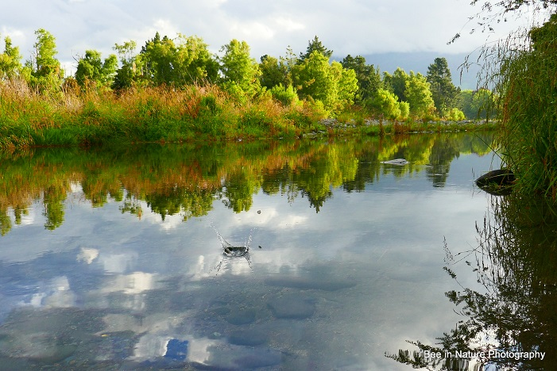

 Значит, изгнать этот страх из души и потемки развеять Должны не солнца лучи и не света сиянье дневного, Но природа сама своим видом и внутренним строем. За основание тут мы берем положенье такое: Из ничего не творится ничто по божественной воле. Значит, нам смерть — ничто и ничуть не имеет значенья, Ежели смертной должна непременно быть духа природа.
Значит, изгнать этот страх из души и потемки развеять Должны не солнца лучи и не света сиянье дневного, Но природа сама своим видом и внутренним строем. За основание тут мы берем положенье такое: Из ничего не творится ничто по божественной воле. Значит, нам смерть — ничто и ничуть не имеет значенья, Ежели смертной должна непременно быть духа природа. Значит, изгнать этот страх из души и потемки развеять Должны не солнца лучи и не света сиянье дневного, Но природа сама своим видом и внутренним строем. За основание тут мы берем положенье такое: Из ничего не творится ничто по божественной воле. Значит, нам смерть — ничто и ничуть не имеет значенья, Ежели смертной должна непременно быть духа природа.